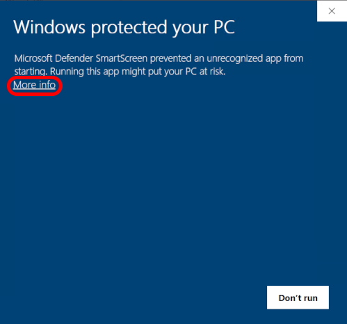
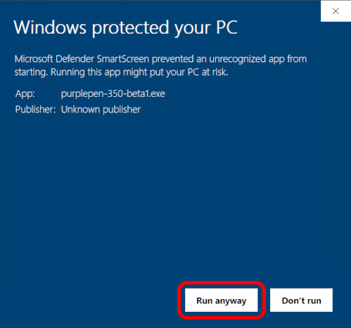
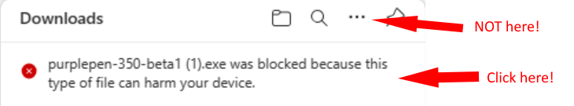
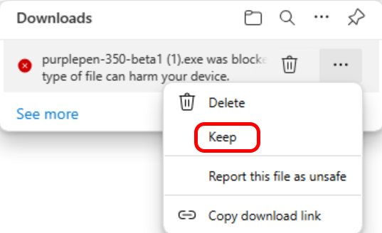

Starting with Purple Pen 3.5.0, the Purple Pen installer is no longer signed with a code signing certificate. The prices of code signing certificates have increased dramatically, and it is no longer cost-effective to purchase one for Purple Pen.
Because of this, a Windows feature called "SmartScreen" may warn you that the installer is dangerous. The following instructions will help you install Purple Pen.
You can also bypass all of this trouble by installing via the Microsoft Store instead.
You may see the following warning when running the installer:

Click the text "More Info"

Click the button "Run Anyway".
If you use Microsoft Edge to download the installer, you may also see messages when downloading the installer.

Click the "..." next to the message (NOT the one next to the title Downloads) (the "..." may not be visible until you move your mouse over the message).

On the menu that appears when you click "...", click "Keep".